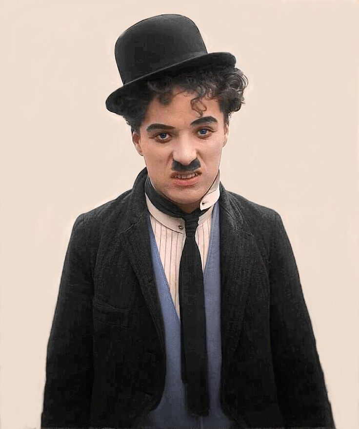

Find an image of a famous comic actor who regularly uses comedic elements in their performances (Eg. Rowan Atkinson). Include some interesting information about their performance techniques/style.
Charles Chaplin is considered to be one of the most significant actors of the early days of Hollywood. He is most recognized for being a star of the silent film era. He is often found in films wearing his usual attire of a bowler hat, bamboo cane, funny walk and a toothbrush moustache, also known as “The Little Tramp”.
After watching some of his performance, I would describe him as using Overstatement with his exaggerated movements and he uses Slapstick comedy very liberally. To me, the exaggerated movement looks very unnatural but I suspect they put this to use to overcome the silent films as a medium.